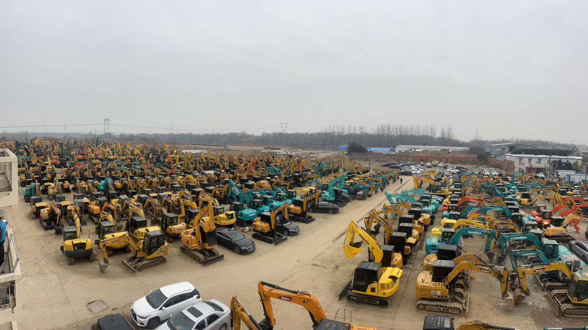

Refurbished Doosan DH55 Excavator
The Doosan DH55 Excavator is a versatile and efficient machine designed for light to medium-duty construction and excavation tasks. Known for its robust engine, compact design, and reliable hydraulic system, this excavator excels in various applications, including trenching, digging, and material handling. When refurbished, the Doosan DH55 offers an excellent combination of performance and cost-effectiveness, making it an attractive option for businesses looking for a reliable excavator at a reduced price.
Honestly, it's almost impossible to buy a brand new excavator from China. They either don't exist or are made in China. If a Chinese seller tells you their Caterpillar/Komatsu/Volvo/Kobelco/Hitachi is brand new, they're lying. Therefore, a refurbished excavator is your best bet.

Here are the detailed specifications for a refurbished Doosan DH55-7 excavator, structured for technical documentation and consistent with your annotated library:
Operating Weight and Dimensions
- Operating Weight: 5,300–5,500 kg
- Transport Length: ~5.5–5.6 meters
- Transport Width: ~1.92 meters
- Transport Height: ~2.55 meters
- Tail Swing Radius: ~1.65–1.7 meters
- Ground Clearance: ~350 mm
- Track Width: 400 mm standard
Engine and Powertrain
- Engine Model: Yanmar 4TNV94L or Doosan D18 (Tier 2 compliant)
- Rated Power Output: ~36–39 kW (48–52 hp) @ 2,200 rpm
- Maximum Torque: ~200–220 Nm
- Fuel Tank Capacity: ~80–90 liters
- Travel Speed: 2.6–4.8 km/h
- Swing Speed: ~9.5 rpm
- Gradeability: Up to 30°
Hydraulic System
- Main Pump Type: Variable displacement axial piston pump
- Flow Rate: ~2 × 60–70 L/min
- System Pressure: Up to 24.5 MPa
- Hydraulic Oil Capacity: ~70–80 liters
- Control System: Load-sensing with pilot-operated valves
- Boom/Arm/Bucket Priority: Configurable via control lever
Performance Metrics
- Bucket Capacity: 0.11–0.14 m³ (SAE heaped)
- Max Digging Depth: ~3.7–3.9 meters
- Max Reach (Horizontal): ~5.9–6.1 meters
- Max Dump Height: ~3.9–4.1 meters
- Bucket Digging Force: ~38–40 kN
- Arm Digging Force: ~25–28 kN
Cab and Operator Features
- Cab Type: ROPS/FOPS certified (canopy or enclosed)
- Display: Analog gauges or basic LCD monitor
- Controls: Pilot joystick controls with auxiliary hydraulic circuit
- Comfort: Adjustable seat, optional air-conditioning
- Visibility: Wide glass area, LED work lights
Smart Features and Efficiency
- Fuel Efficiency:
- Mechanical fuel injection
- Auto idle and engine shutdown
- Emissions Control: Tier 2 compliant (no DPF/SCR)
- Transportability: Easily trailerable under 6-ton class
Attachments Compatibility
- Standard Bucket: 0.11–0.14 m³
- Optional Tools: Hydraulic breaker, auger, compactor, ripper
- Quick Coupler: Manual or hydraulic options available
Refurbishment Scope
Refurbished DH55 units typically include:
- Engine Overhaul: Cylinder head, injectors, turbo, seals
- Hydraulic Restoration: Pump recalibration, valve block testing, hose replacement
- Electrical Diagnostics: Monitor, sensors, wiring harness
- Cab Reconditioning: Seat, joysticks, HVAC, repainting
- Structural Repairs: Boom/bucket welding, bushing replacement, undercarriage rebuild
Overview of the Doosan DH55 Excavator
The Doosan DH55 Excavator is part of Doosan’s series of hydraulic excavators designed for maximum productivity and minimal operational costs. With its compact size, this machine is perfect for urban construction, small-scale excavation jobs, and other tasks where space is limited but performance is essential.
Key Specifications of the Doosan DH55
-
Operating Weight: Approximately 5,500 kg (12,125 lbs)
-
Engine Power: 36.4 kW (48.9 hp)
-
Max Digging Depth: Around 4.2 meters (13.8 feet)
-
Max Reach: About 6 meters (19.7 feet)
-
Bucket Capacity: Typically 0.25 to 0.35 cubic meters (8.8 to 12.3 cubic feet)
-
Fuel Tank Capacity: Approximately 120 liters (31.7 gallons)
-
Travel Speed: Maximum speed of 5.3 km/h (3.3 mph)
These specifications position the Doosan DH55 Excavator as a compact yet powerful machine, ideal for various tasks such as small-scale excavation, trenching, landscaping, and material handling. Its lightweight nature makes it suitable for projects in confined spaces, such as urban or residential areas.
Performance and Efficiency
The Doosan DH55 Excavator is designed to deliver excellent performance in various working conditions. The combination of a 36.4 kW engine and advanced hydraulic system ensures that the machine can handle a range of excavation tasks efficiently.
Key Performance Features:
-
Efficient Hydraulics: The hydraulic system of the Doosan DH55 ensures smooth and efficient operation, even in demanding environments. The hydraulics are designed to optimize power delivery, making the machine highly effective in digging, lifting, and moving materials.
-
Powerful Digging Force: With its powerful digging force, the Doosan DH55 is equipped to handle tough soils and dense materials. Whether you’re digging trenches, foundations, or moving earth, this excavator delivers reliable and consistent performance.
-
Fuel Efficiency: One of the standout features of the Doosan DH55 is its fuel efficiency. The machine’s fuel system is designed to reduce consumption while maintaining high performance, helping operators save on operating costs over the machine's lifespan.
-
Reduced Noise and Vibration: The Doosan DH55 is engineered to operate quietly and with minimal vibration, ensuring a comfortable working environment for the operator and minimizing fatigue during long shifts.
Durability and Construction
The Doosan DH55 is built to withstand demanding working conditions. Its robust construction ensures the excavator can endure tough environments and continue to perform effectively. Designed for durability, the Doosan DH55 is suitable for heavy-duty applications without compromising its efficiency.
Key Durability Features:
-
Reinforced Undercarriage: The undercarriage of the Doosan DH55 is reinforced to provide stability on uneven ground. It is designed to withstand the stresses of continuous operation, ensuring longevity and reliability.
-
Heavy-Duty Components: The machine’s boom, arm, and bucket are reinforced to handle tough materials and rough work sites. These components are built to endure wear and tear, reducing the need for frequent repairs.
-
Weather-Resistant Design: Whether working in hot or cold climates, the Doosan DH55 is designed to handle extreme weather conditions. Its construction includes weather-resistant features, enabling the machine to continue working in various environmental challenges.
Operator Comfort and Safety
The Doosan DH55 Excavator is equipped with an ergonomic operator cabin designed to enhance comfort during long working hours. The cabin is spacious and equipped with intuitive controls to reduce fatigue and improve overall productivity.
Key Comfort and Safety Features:
-
Ergonomically Designed Cabin: The operator's cabin of the Doosan DH55 is designed for comfort and ease of use. It includes an adjustable seat, large windows for better visibility, and well-placed controls that make operation more intuitive.
-
Improved Visibility: The large windows provide excellent visibility for the operator, ensuring they can see their surroundings and work area clearly. This reduces the risk of accidents and improves safety during operations.
-
Safety Features: The Doosan DH55 is equipped with key safety features, such as a Roll-Over Protective Structure (ROPS) and Falling Object Protective Structure (FOPS). These safety features protect the operator in the event of a rollover or if debris falls from above.
Versatility with Attachments
The Doosan DH55 Excavator offers flexibility through a wide range of compatible attachments, allowing it to handle multiple tasks on a construction site. With the use of attachments like hydraulic hammers, augers, and buckets, the Doosan DH55 becomes even more versatile.
-
Quick Coupler System: The machine can be fitted with a quick coupler system, enabling fast and easy attachment changes. This reduces downtime between tasks, increasing overall productivity.
-
Wide Range of Attachments: Common attachments for the Doosan DH55 include buckets, hydraulic hammers, augers, and grapples. These attachments are ideal for trenching, material handling, and digging, making the Doosan DH55 suitable for multiple job sites.
Benefits of Purchasing a Refurbished Doosan DH55 Excavator
Opting for a refurbished Doosan DH55 Excavator offers several benefits that make it an excellent investment for businesses. Refurbishment can bring a machine back to near-new condition, offering significant savings while retaining much of the performance and reliability of a new unit.
Advantages of a Refurbished Doosan DH55 Excavator:
-
Lower Cost: A refurbished Doosan DH55 is typically more affordable than buying a new machine. This makes it a great choice for businesses seeking a cost-effective solution without sacrificing quality and performance.
-
Restored to Like-New Condition: A reputable dealer will ensure that the refurbished Doosan DH55 undergoes extensive inspections and repairs to ensure that it operates at optimal performance. Key components such as the engine, hydraulics, and undercarriage are often replaced or overhauled.
-
Warranty and Support: Many refurbished units come with warranties, offering buyers peace of mind. Additionally, dealers often provide after-sales support, including parts availability and maintenance services.
-
Environmental Impact: Purchasing a refurbished excavator reduces the environmental impact of producing new machines, contributing to sustainability efforts by extending the lifecycle of the equipment.
Maintenance Tips for the Doosan DH55 Excavator
Proper maintenance is key to extending the life of any excavator, and the Doosan DH55 is no exception. Regular inspections and maintenance can prevent costly repairs and downtime.
Maintenance Recommendations:
-
Engine and Hydraulic System: Regularly check the engine oil and hydraulic fluid levels. Replace filters as needed and inspect hoses and components for wear or leaks.
-
Undercarriage Inspection: Inspect the undercarriage periodically to check for signs of wear, such as loose tracks, worn rollers, or damaged sprockets. Proper maintenance of the tracks and undercarriage components ensures long-term performance.
-
Cooling System: Ensure that the cooling system is functioning correctly by checking the coolant levels and inspecting the radiator for any debris or blockages. Overheating can lead to engine damage.
-
Cabin and Safety Features: Inspect safety features, such as the seatbelt, ROPS, and FOPS, to ensure they are in good working condition. Keeping the cabin clean and functional ensures the operator’s comfort and safety.
Conclusion
The Doosan DH55 Excavator is a compact, efficient, and versatile machine perfect for small to medium excavation projects. With its fuel-efficient engine, powerful hydraulics, and durable construction, the Doosan DH55 offers an excellent balance of performance and value. Purchasing a refurbished Doosan DH55 allows businesses to get top-quality equipment at a lower cost, without sacrificing reliability or performance.
With proper maintenance, the Doosan DH55 Excavator can provide many years of dependable service, making it an excellent investment for any contractor or construction company. Whether you’re working on urban construction, landscaping, or utility installation, the Doosan DH55 is a reliable partner that gets the job done efficiently and effectively.
Our Commitment
- 2 years / 4000 hours warranty.
- EPA certified.
- No sweatshop labor.
Contacts

- [email protected]
- Youtube Instagram Facebook
- Navigation: G206 (Sishu Bridge) in Changfeng County, Hefei City, Anhui Province, 200 meters north to the east